Эмблемы автопроизводителей
Каждый день, когда вы выходите на улицу, мимо вас проезжает множество автомобилей разных марок, произведенных в разных странах мира. У каждой из них на радиаторной решетке и на крышке багажника расположена уникальная эмблема – знак отличия автомобиля. Конечно же, это не хаотичная дизайнерская выдумка. Каждое сочетание цифр, букв и символов имеет значение.
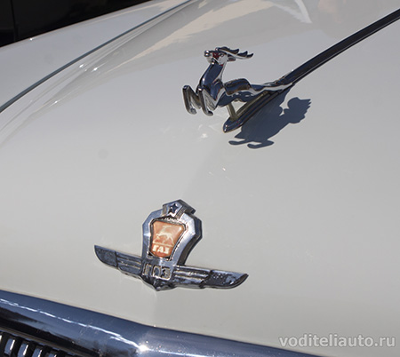
Волга ГАЗ 21
Над любым логотипом той или иной марки авто годами работают опытные дизайнеры, которые стараются отразить в ней историю, традиции и много других, важных для владельца компании, нюансов, благодаря которым в будущем именно эту эмблему будут связывать с зарекомендовавшей себя маркой автомобилей.
Конечно же, различные истории, связанные с названиями того или иного автомобиля, зачастую имеют прямое отношение к основателям компаний, которые их производят. Некоторые из этих имен влияют на внешнюю отделку и служат некой стартовой точкой для дизайна эмблемы, своеобразного опознавательного знака машины.
Многолетняя история автомобильной отрасли имеет свои мифы и легенды. В основном они связаны с историей создания той или иной эмблемы (логотипа) автомобиля. Каждая из них имеет свое послание из прошлого, а о занимательных историях создания логотипа того или иного торгового бренда пишут книги и статьи, а также снимают телевизионные программы.
В данной статье расскажем о 100 эмблемах автомобилей мира с названиями и фото. Охватим множество стран и практически все континенты и части света. Вы готовы к увлекательному путешествию? Тогда пристегивайтесь. Поехали!
Австралийские
001 Holden
Изображение льва в названии компании появилось еще в те времена, когда его гравировали на пороге дома в конце XIX века, в это время компания выпускала седла и экипажи. В 1928 году известный скульптор Дж.Р.Хофф вылепил скульптуру «Лев и камень». Согласно древнеегипетской легенде, человек придумал колесо, когда увидел льва, катящего камень. Символическое изображение скульптуры Хоффа легло в основу логотипа австралийской компании.
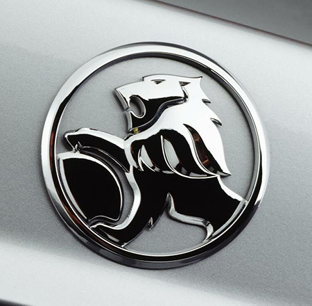
Эмблема Holden
Азиатские
Индийские
002 TATA Motors
Эмблема этой самой известной индийской марки автомобилей чем-то очень напоминает корейские торговые знаки компаний Daewoo и KIA, те же шрифты, те же цвета. В 1945 году с конвейера индийского завода сошли первые локомотивы, это было началом деятельности компании TATA. А в 1954 году начался выпуск первых автомобилей под этим же брендом.
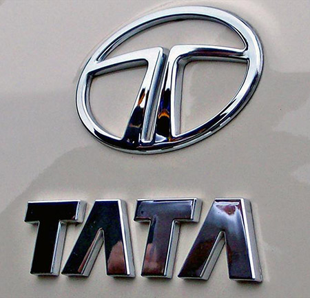
Эмблема TATA
Иранские
003 Iran Khodro
Слово «khodro» в переводе значит «быстроногий конь», отсюда и голова лошади на щите в эмблеме иранского автомобиля, который очень похож на французскую модель Peugeot 405. Фирму по выпуску автомобилей в 1962 году создали братья Ахмад и Махмуд Хайями.
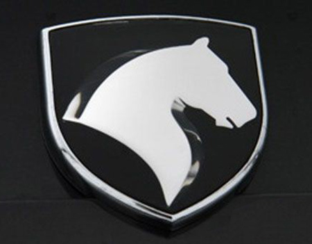
Эмблема Iran Khodro
Китайские
004 BYD
Цветовая гамма на эмблеме китайского автомобиля BYD – это очередной пример плагиата, не имеющий никакого отношения ни к процессу создания модели, ни к ее производителям. Присмотритесь внимательно, и вы увидите сходство с торговым знаком BMW.
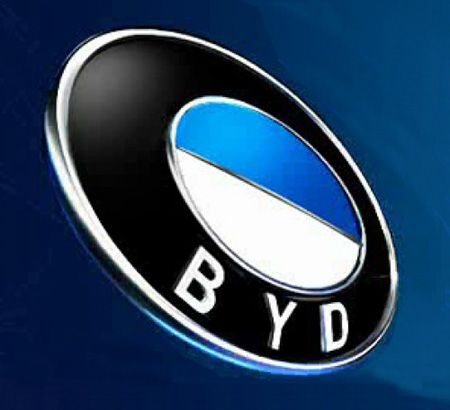
Эмблема BYD
005 Brilliance
Конечно же, даже несведущему, понятно, что название этой марки переводиться, как «бриллиант». Этим китайские производители хотели подчеркнуть высокое качество предлагаемого товара. Сам же товарный знак состоит из комбинации двух иероглифов, которые означают это слово.
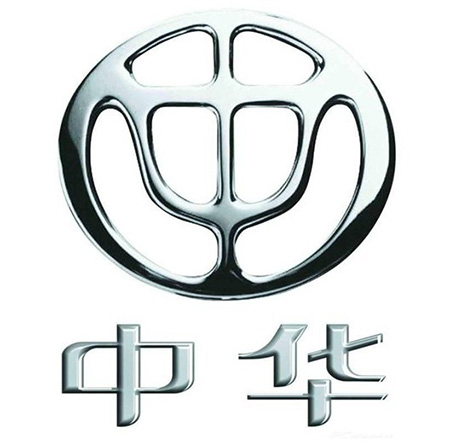
Эмблема Brilliance
006 Chery
В 2013 году компания «Chery Automobile» предъявила миру новый видоизмененный логотип. Он выглядит в виде овала с похожим на алмаз треугольником в центре. По комментариям китайских производителей к эмблеме своих автомобилей, стороны треугольника символизируют собой основные показатели работы компании: качество, технологии и развитие.
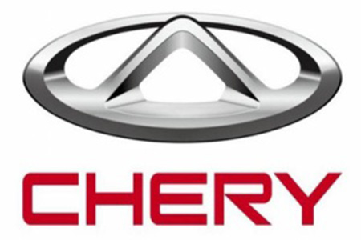
Эмблема Chery
007 FAW
Эмблема этой одной из старейших торговых марок состоит из двух видоизмененных иероглифов, которые читаются как «первый» и «автомобиль». Дизайнеры этого символа утверждают, что задумывали его в виде ястреба, расправившего крылья в полете. Этот символ наполнен гордостью за успехи китайского машиностроения.
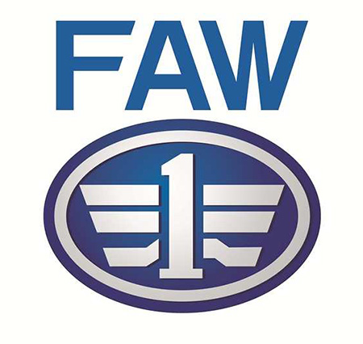
Эмблема FAW
008 Foton
Еще один пример подражания. Только в этом случае логотип китайской автомобильной марки очень похож на известный бренд по производству спортивной обуви Adidas. При этом автомобили Foton входят в тройку самых значимых авто-брендов Китая.
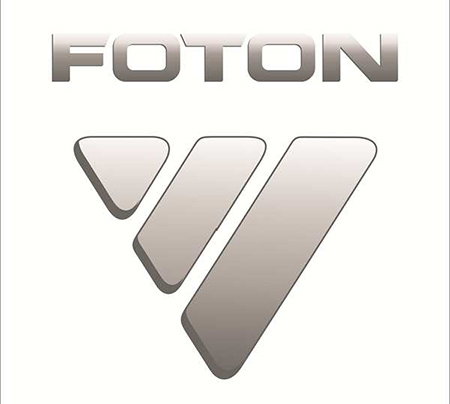
Эмблема Foton
009 Geely
В апреле 2014 года представители компании «Geely» объявили о выходе на рынок новых автомобилей с обновленным дизайном логотипа. У новой эмблемы Geely сохранился дизайн своего гибридного концепта Emgrand, но появились новые цвета – ярко синий и черный.
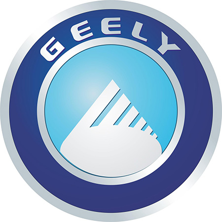
Эмблема Geely
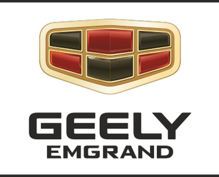
Эмблема Geely Emgrand
010 Great Wall
Долгое время под этой торговой маркой выпускали только небольшие грузовички. Сейчас же «Great Wall Motors» — это мощнейший конструкторско-испытательный центр, расположенный в индустриальном парке Баодин. На эмблеме красуется две большие буквы «G» и «W». А замкнутое кольцо логотипа представляет собой символ Великой Китайской стены.
Эмблема Great Wall
011 Hafei
Машины, выпускающиеся под этой маркой, являются недорогими по стоимости и пользуются спросом в широких кругах населения. Логотип имеет вид щита, а волны символизируют русло реки Сунгари, вблизи которой расположен город Харбин. Именно в нем начала свою историю ТМ Hafei.
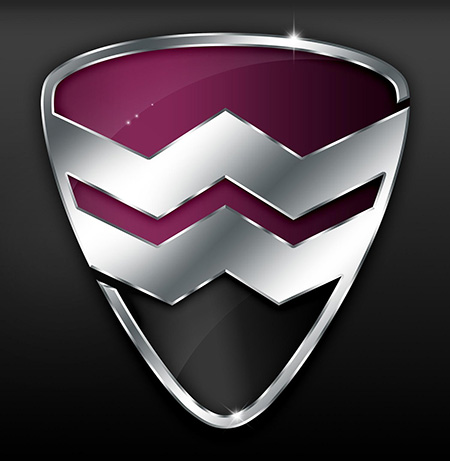
Эмблема Hafei
012 Haima
Если разделить название этой торговой марки на два слова «hai» и «ma», то знатоки заметят, что первое слово символизирует название провинции Хайнан, а второе компанию «Mazda». Даже логотип этого автомобиля очень схож со своим японским прототипом.
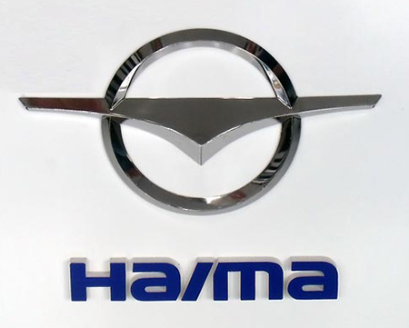
Эмблема Haima
013 Lifan
Эмблема ТМ Lifan – это, схематически изображенные, три парусных судна. Само же название машины в переводе с китайского языка означает «мчаться на всех парах».
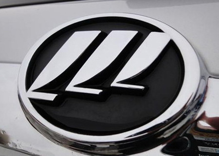
Эмблема Lifan
Малазийские
014 Proton
Логотип этой малазийской компании вначале имел вид полумесяца и звезды с четырнадцатью концами. В конце девяностых годов обновленная марка авто получила новую эмблему. Теперь она имеет вид головы тигра и надпись с названием бренда.
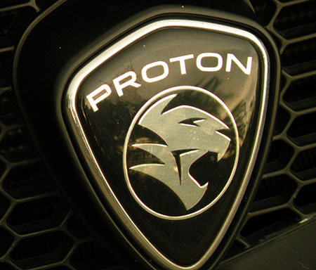
Эмблема Proton
Узбекские
015 Uz-Daewoo
В марте 2008 года в Узбекистане было создано совместное предприятие «GM Uzbekistan». Оно начало выпускать автомобили марки Uz-Daewoo. Понятно, что оригинальный логотип популярного бренда Daewoo практически не изменился. К нему только были добавлены две буквы спереди. Последние годы продукция этой узбекской компании вошла в список десяти самых продаваемых марок в России.
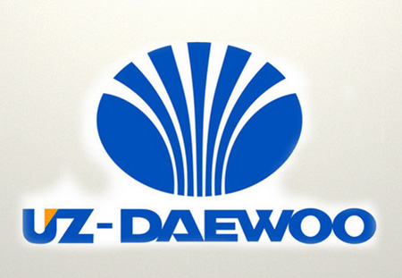
Эмблема Uz Daewoo
Южнокорейские
016 Daewoo
Слово «daewoo» в переводе с корейского языка означает «большая вселенная». А эмблема этой популярной марки из Южной Корее имеет вид стилизованной морской раковины.
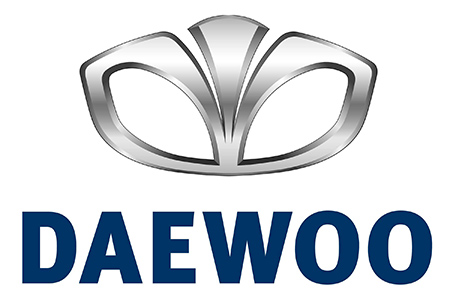
Эмблема Daewoo
017 Hyundai
Очень просто выглядит эмблема этой знаменитой южнокорейской ТМ. Это первая буква в названии компании — «H», написанная красивым дизайнерским стилем. А вот если заглянуть в словарь и посмотреть перевод этого слова, то вы узнаете, что дословно оно означает «современность», «новая эпоха» или «новое время».
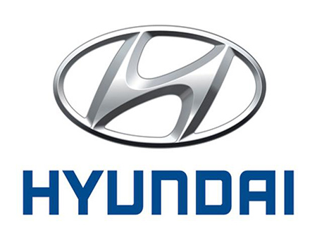
Эмблема Hyundai
018 KIA
Это слово дословно переводится как «повышение Азии». Эмблема с трехмерным изображением олицетворяет молодую и энергичную компанию. Красный цвет – это тепло Солнца, как стремление ввысь. Символом Земли здесь служит эллипс, он подчеркивает мировую известность бренда.
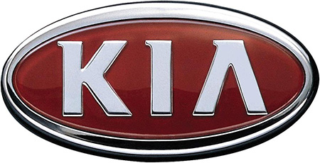
Эмблема KIA
Японские
019 Acura
На латыни слог «Acu» имеет значение аккуратности, надежности и точности. В логотипе присутствует измененная в виде кронциркуля буква «А». Задача этой эмблемы состоит в выявлении технических и дизайнерских достоинств японского бренда.
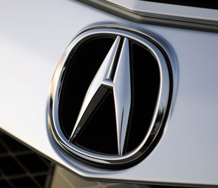
Эмблема Acura
020 Daihatsu
Эмблема этого японского бренда выглядит в виде стилизованной буквы «D» и символизирует удобство и компактность. Для полноты восприятия вспомните слоган компании «Мы делаем это компактным» и вы все поймете.
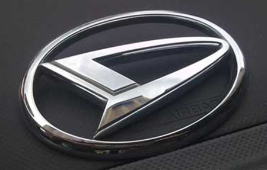
Эмблема Daihatsu
021 Honda
Расшифровка значения логотипа ТМ «Honda» очень проста. Во-первых, это первая буква слова, во-вторых, это фамилия основателя компании Соитиро Хонда.
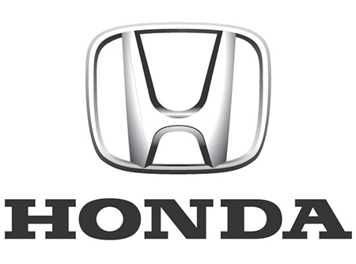
Эмблема Honda
022 Infiniti
При начальных работах над созданием логотипа была идея использовать знак бесконечности, ведь в переводе слово имеет именно этот смысл. Но, потом сделали его в виде дороги, идущей в бесконечность. Этот символ имеет подспудное значение совершенства во всем.
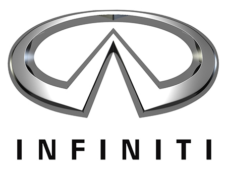
Эмблема Infiniti
023 Isuzu
Все элементарно, логотип выглядит в виде заглавной буквы «I» в стилизованном варианте. Но, мудрые японцы, и в одной букве могут найти кучу смыслов. Они трактуют этот логотип и, особенно, его цветовую гамму в качестве открытости миру и горению сердец сотрудников компании.
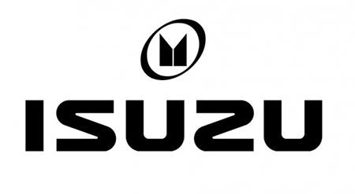
Эмблема Isuzu
024 Lexus
Идея эмблемы принадлежит итальянскому дизайнеру Джорджетто Джуджаро. Ему не понравилась первая идея логотипа, имеющего вид геральдического щита. Он придумал изогнуть в динамике и поместить в овал заглавную букву модели. По его мнению, такой вариант символизирует роскошь.
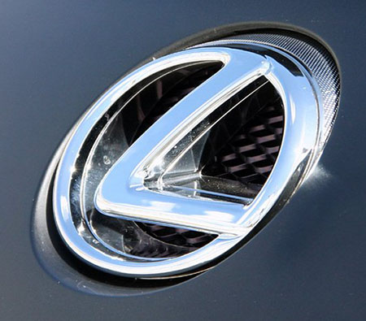
Эмблема Lexus
025 Mazda
Начиная с 1934 года, логотип этого автомобиля имел шесть вариантов. Последний был зафиксирован в 1997 году и предъявлен миру вместе со слоганом «Zoom-Zoom». Соответствуя духу компании, заглавная буква «М» с крыльями символизирует идеи свободы и полета. Существует легенда, что дед основателя компании был большим поклонником Чехова и однажды попал в МХТ на спектакль «Чайка». Через много лет его внук увидел на старой программке логотип в виде чайки и решил использовать его в своем бизнесе.
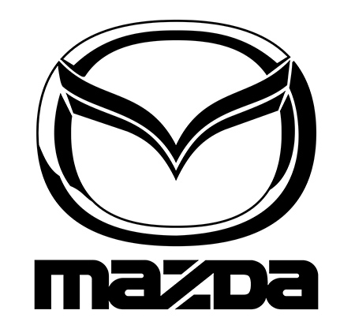
Эмблема Mazda
026 Mitsubishi
Тайное значение имеет название еще одного популярного японского бренда. Его название состоит из двух слов «mitsu» — «три», и «hishi» — «водяной каштан», его еще называют «ромбовидным алмазом». Официальный перевод слова звучит, как «три алмаза». А логотип компании сочетает в себе герб ее основателей семьи Ивасаки, который состоит из трехрядного алмаза и гребня клана Тоса из трех листов.
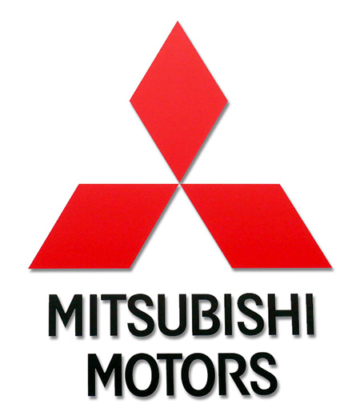
Эмблема Mitsubishi
027 Nissan
Название компании появилось в 1934 году от слияния двух слов означающих непосредственно страну-изготовителя, Японию, и ее промышленность. Красный круг на логотипе компании символизирует солнце, которое восходит, и чувство искренности. Синий прямоугольник является символом неба. Эта эмблема, как нельзя лучше подходит к девизу компании «Искренность приносит успех».
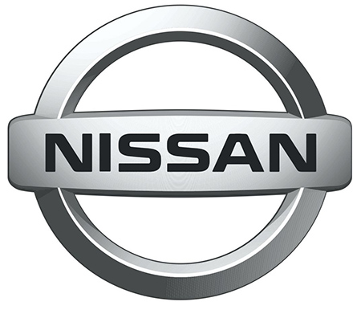
Эмблема Nissan
028 Subaru
В переводе с японского слово «subaru» можно перевести, как «указывающие путь» или «собирающие вместе», а еще плеяду звезд в Созвездии Тельца. Эмблема автомобиля, на которой «сияют» шесть звезд имеет значение высокого качества изготовления, использования передовых технологий и замечательные ходовые качества машины.
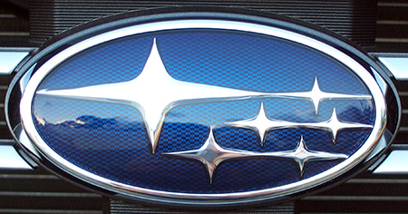
Эмблема Subaru
029 Suzuki
История этого логотипа тоже до безумия проста. Латинская буква «S» стилизована под японский иероглиф и это первая буква фамилии основателя данной ТМ Митио Судзуки.
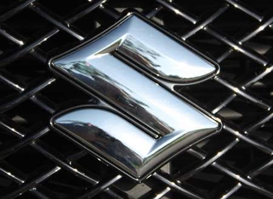
Эмблема Suzuki
030 Toyota
В 2004 году эмблема известного бренда Toyota претерпела некоторые изменения. Производители этого товара обещали своим покупателям превосходное качество. Соответственно, превосходной должна была стать и эмблема. Это объемное изображение цветом серебристого металлика, с тремя овалами, два из которых расположены в центре композиции перпендикулярно и символизируют взаимопонимание между производителем и покупателями.
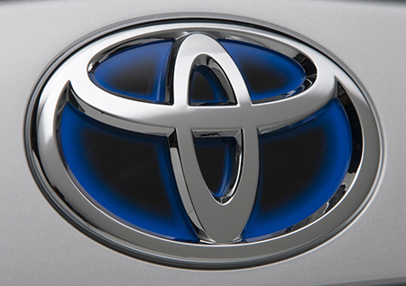
Эмблема Toyota
Американские
031 Buick
Эмблема элитного автомобиля Buick менялась множество раз. В 1975 году на логотип вновь вернулось название компании, как и в самом начале производства этой модели. И, когда компания запустила в производство новую разновидность машины под названием Skyhawk, в эмблему добавили фигуру ястреба. Skyhawk прекратил свое существование в конце восьмидесятых, и на эмблему вернулись три герба шотландских аристократов и основателей компании семьи Бьюик.
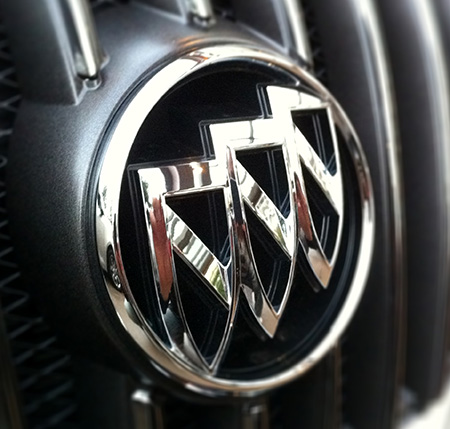
Эмблема Buick
032 Cadillac
В 1999 году владелец ТМ Cadillac концерн GM решил внести изменения в существующую эмблему. Для того чтобы сделать ее современной в наступающем 21 веке было решено убрать из нее изображения птиц и короны. Оставшийся герб древнего дворянского рода де Ля Мот Кадильяков и обрамляющий его венок решили сделать в виде графики. Над новой эмблемой пригласили поработать абстракциониста из Нидерландов Пита Мондриана. Таким образом, на грани веков получилось соединить прошлое и будущее.
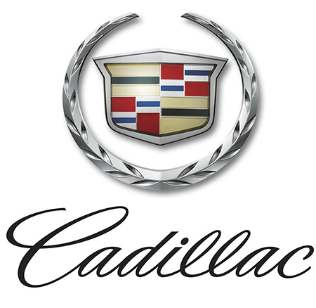
Эмблема Cadillac
033 Chevrolet
Есть несколько версий появления эмблемы этого культового авто. Одна из них гласит, что один из основателей компании Уильям Дюрант во время посещения Парижа на обоях комнаты в гостинице увидел этот рисунок и сделал его логотипом нового автомобиля. Согласно другой версии, Дюрант часто рисовал различные варианты эмблемы и в итоге нарисовал тот самый галстук-бабочку, который и стал эмблемой Chevrolet. И, наконец, последняя версия состоит в том, что Дюрант в одной из газет увидел рекламу угольной компании с использованием этого символа и запатентовал его для своего бизнеса.
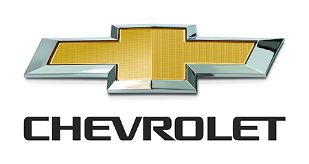
Эмблема Chevrolet
034 Chrysler
Перипетии истории эмблемы автомобиля Chrysler похожи на долгоиграющий бразильский сериал. За прошлый век его внешний облик менялся огромное количество раз. Например, в 2007 году, он выглядел в виде звезды из пяти лучей. А в 2009 году его вновь поменяли, и теперь он имеет вид своего названия, размещенного на синем фоне с раскинутыми серебряными крыльями.
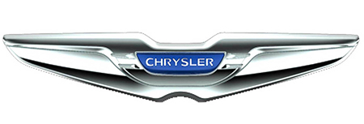
Эмблема Chrysler
035 Dodge
Логотип компании Dodge в течение 20 века менялся много раз. В 2010 году было решено убрать из эмблемы голову барана и сделать простую надпись с названием компании и двумя наклонными полосами.
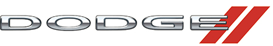
Эмблема Dodge
036 Eagle
Логотип этого торгового бренда представляет собой треугольник с дуговыми сторонами в виде герба, внутри которого находится контурное изображение головы орла. Эмблема выполнена полностью в черном цвете с белыми контурными линиями.
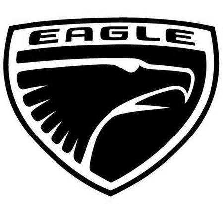
Эмблема Eagle
037 Ford
В 2003 году в честь столетия компании «Ford» было принято решение сделать небольшие изменения в логотипе. Компания вернулась к овальной эмблеме с «летящими буквами» образца 1927 года заменив в ней только цветовую подкладку с фиолетовой на синюю с переливами.
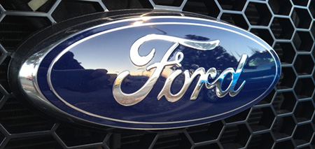
Эмблема Ford
038 GMC
Компания «General Motors Corporation» была образована в 1916 году. Создатели компании братья Грабовски до создания GM занимались производством грузовиков. После того, как к ним присоединился Уильям Дюран, компания взяла новое название и объединила вокруг себя всю машиностроительную отрасль Мичигана. Эмблема не представляет собой ничего особенного и выигрывает только за счет цветовой гаммы красного с серебряным обрамлением.
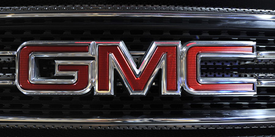
Эмблема GMC
039 Hummer
Изначально эта торговая марка внедорожника компании «General Motors» предназначалась для использования в армии, чуть позднее ее начали продавать и гражданским лицам. В эмблеме нет никаких изысков. Да и зачем они в армии?
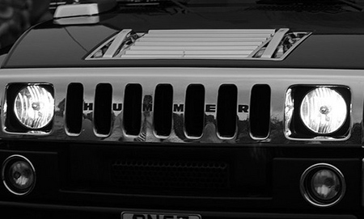
Эмблема Hummer
040 Jeep
Также как и Hummer, автомобиль марки Jeep изготавливался для использования в военных целях и потому особо никто не обращал внимания на оригинальность его логотипа. Вначале его просто не существовало. Когда автомобиль пустили в широкую продажу, появился и логотип, представляющий собой две окружности и семь прямоугольников, расположенных вертикально. Эта композиция визуально похожа на переднюю часть внедорожника.
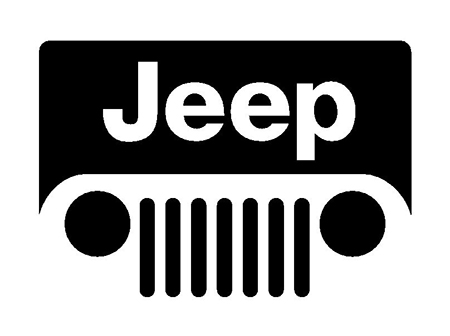
Эмблема Jeep
041 Lincoln
За основу логотипа компании «Lincoln» взяли стилизованный компас, который одновременно указывает на все стороны света. В то время, когда эта торговая марка пользовалась огромным успехом по всему миру, такой логотип был уместен. На данный момент спрос на продукцию компании значительно упал даже в США.
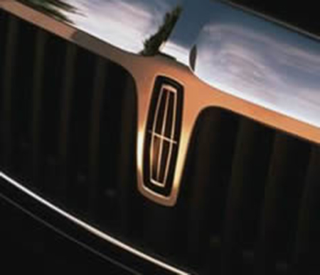
Эмблема Lincoln
042 Mercury
Не так давно в логотипе автомобильного бренда Mercury появилась стилизованная буква «М». А 1939 году сын Генри Форда Эдсель придумал название новому автомобилю в честь покровителя торговли бога Меркурия и изобразил на эмблеме машины его профиль.
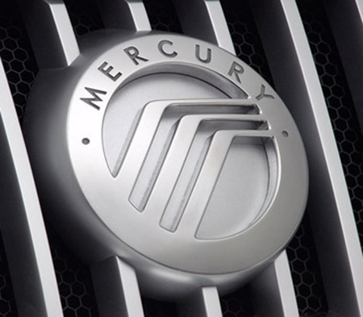
Эмблема Mercury
043 Oldsmobile
Последняя из существующих эмблем уже не существующей компании была выполнена в японском автомобильном стиле, отличающемся простотой и лаконичностью. Выглядела она в виде стилизованной буквы, которая «прорывается» через овальную рамку, в которой она находится. Эмблема была призвана символизировать технологическую модификацию модели, которая способна конкурировать с подобными моделями автомобилей из Европы и Японии. Остался и легкий «кивок» в сторону старого логотипа, в виде намека на ракету внутри эмблемы.
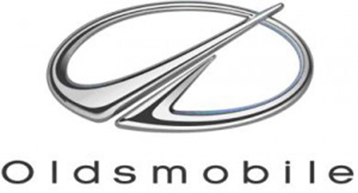
Эмблема Oldsmobile
044 Plymouth
В 2001 году эта марка прекратила свое существование. А до этого момента ее логотип выглядел в виде корабля «Мэйфлауэр», с помощью которого в Америку приплыли ее первооткрыватели, причалившие у Плимутского камня.
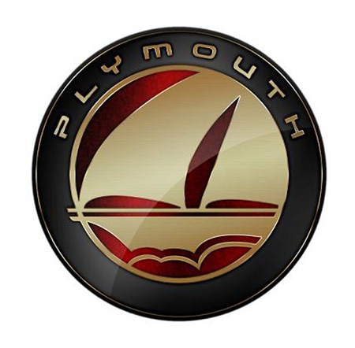
Эмблема Plymouth
045 Pontiac
В начале существования этого автомобиля ее эмблема представляла собой головной убор индейца. В 1957 году ее вид был изменен, и она стала похожей на стрелу красного цвета, которая визуально находится в месте раздвоения радиатора. К сожалению, и эта марка американского автомобиля приказала долго жить.
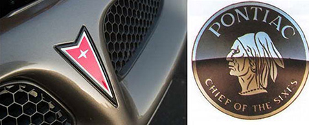
Эмблема Pontiac
046 RAM
Эта машина от компании «Chrysler Group LLC» имеет гербовый логотип с головой круторогого барана, помещенного в середину эмблемы. Вся композиция выполнена в цвете серебристого металлика с отливом.
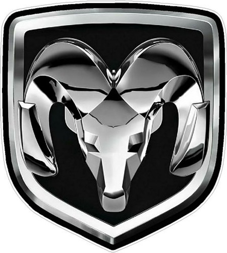
Эмблема RAM
047 Saturn
Еще один автомобиль из категории «выбывших». На его эмблеме размещен образ планеты Сатурн с кольцами. Надпись на эмблеме исполнена тем же шрифтом, что и на ракете-носителе «Сатурн-5», который доставил американцев на Луну.
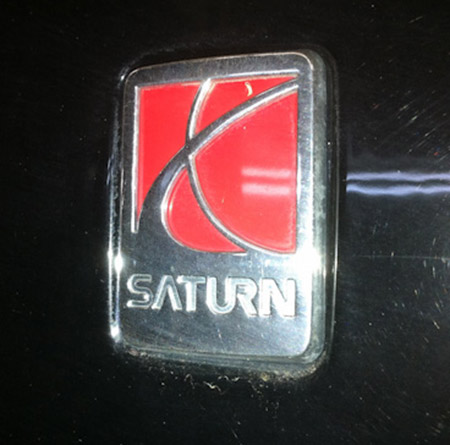
Эмблема Saturn
048 Scion
Для этой марки логотип был придуман дизайнерами Калифорнии. В его основе буква «S» в виде выставленных плавников акулы, так как изначально этот автомобиль предназначался для любителей экстремальных видов спорта и рыбалки на океане. Слово «scion» переводится как «наследник».
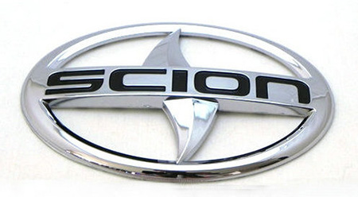
Эмблема Scion
Европейские
Английские
049 Aston Martin
Логотип любимого автомобиля первого Джеймса Бонда появился в 1921 году в виде букв «A» и «M», которые были вписаны в окружность. Основатель компании Лайонел Мартин дал своему детищу вторую часть названия, а первую часть взяли у городка Астон Клинтон в Англии, где автомобиль выиграл свою первую гонку. В 1927 году к существующей эмблеме добавили крылья.
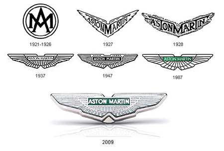
Эмблема Aston Martin
050 Bentley
В логотип ТМ Bentley удачно вписаны раскрытые крылья, символизирующие скорость, независимость и силу. В середину композиции размещена буква «B», в честь создателя компании Уолтера Бентли. Очень большое значение имеет фон, на котором расположена буква. Зеленый фон у машин гоночного типа, красный предназначен для моделей с тонким вкусом, а черный означает мощь и силу.
Эмблема Bentley
051 Caterham
Эмблема этой ТМ вначале своего создания имела поразительные сходства с логотипом автомобиля Lotus. Магическая цифра 7 находилась на логотипе довольно долгое время и была связана с брендом Caterham Super Seven. В январе 2014 года появился совершенно новый логотип с традиционным зеленым цветом и контурами флага Великобритании.
Эмблема Caterham
052 Jaguar
Понятно, что символом этой машины есть известное животное из рода кошачьих. Так что и авто с таким названием должно обладать мощью, красотой и грацией. Эскиз прыгающего ягуара нарисовал в 1935 году начальник отдела рекламы и сбыта компании «Swallow Sidecars» и показал рисунок скульптору Гордону Кросби. А тот слепил такую изящную фигуру ягуара в прыжке. Было время, когда ушлые торговцы автомобилями продавали эту фигуру покупателям автомобилей за дополнительную плату.
Эмблема Jaguar
053 Land Rover
«Land» — это земля, «Rover» — это странник. Автомобиль, странствующий по Земле. Вот в чем основная суть этого замечательного внедорожника. Прошло более 60 лет с тех пор, как Морис Уилкс придумал это название для своих вездеходов. Существует два вида эмблемы ТМ Land Rover. Первый выглядит в виде серебряных букв на черном фоне, второй в виде позолоченных букв на зеленом фоне.
Эмблема Land Rover
054 Lotus
Логотип ТМ «Lotus» — это ярко-желтая окружность, напоминающая солнце, и вписанный в нее треугольник цвета British Racing Green. В треугольник вписано название марки автомобиля и инициалы ее создателя Энтони Колина Брюса Чапмана (ACBC).
Эмблема Lotus
055 MG
Видимо дизайнеры недолго потели над созданием этого фирменного знака. Название марки просто вписано внутрь правильного восьмиугольника.
Эмблема MG
056 MINI
Это одна из «взлетающих» торговых марок с крылышками, которые традиционно имеют значение ловкости, скорости, силы и свободы. А черный цвет силен в инновациях, динамике, элегантности и совершенстве. И как же без серебряного цвета с его изысканностью и величием. Да никак!
Эмблема MINI
057 Morgan
Видимо любимые представители фауны в Великобритании это птицы. Еще один «крылатый» логотип с крестовидной эмблемой на фоне круга и надписью Morgan имеет небольшое предприятие из Англии «Morgan Motor Company», которое выпускает спортивные машины-купе в стиле ретро с самыми современными «внутренностями».
Эмблема Morgan
058 Noble
На эмблеме этой торговой марки красуется имя Ли Ноубла, который был основным дизайнером и руководил компанией «Noble» с 1996 по 2009 годы. Сейчас компания занимается выпуском спортивных автомобилей с высокими скоростями.
Эмблема Noble
059 Rolls-Royce
Существует две эмблемы этого знаменитого автомобиля. На первой находятся сдвоенные буквы RR. Это фамилии учредителей бренда сэра Генри Ройса и Чарльза Стюарта Роллса. Существует версия, что цвет букв с красного на черный поменяли сразу после смерти сэра Генри Ройса в 1933 году. Еще одним символом этого автомобиля, который размещен на капоте есть фигурка парящей, будто бы взлетающей женщины, с развевающимся платьем. Эту фигурку иногда называют «Дух восторга».
Эмблема Rolls-Royce
060 TVR
Этот автомобиль обязан своим появлением на свет двум британским инженерам – Тревору Вилкинсону и Джеку Пикарду, которые в 1947 году образовали компанию «TVR Engineering» и дали ей имя Вилкинсона – TreVoR. Специализация компании – легкие спортивные автомобили.
Эмблема TVR
061 Vauxhall
На эмблеме этой старейшей британской автомобильной марки красуется изображение гриффина – мифического существа с телом и головой льва и орлиными крыльями. Название ТМ пошло от района на южном берегу Темзы.
Эмблема Vauxhall
Итальянские
062 Alfa Romeo
В 1910 году чертежник Романо Каттанео стоял в ожидании трамвая на станции Piazza Castello в Милане. Внезапно он обратил свой взор на изображение красного креста на флаге Милана и на эмблему, которая красовалась на фасаде дома благородной семьи Висконти. На эмблеме была изображена змея, которая заглатывает человека. Со временем он объединил крест и змею. В итоге получился логотип известного автомобильного бренда. В 1916 году к первому названию было добавлено слово Romeo, в честь неапольского предпринимателя Никола Ромео, который стал новым хозяином компании.
Эмблема Alfa Romeo
063 Ferrari
Гарцующая лошадь на эмблеме этой ТМ сначала размещалась на самолетах, которые пилотировал Франческо Барака во время Первой Мировой войны. В 1923 году гонщик из команды Alfa Romeo Энцо Феррари и родители Барака встретились. Они предложили гонщику поместить рисунок с гарцующей лошадью на своем гоночном авто в качестве символа удачи и в память об их сыне. Феррари так и сделал, добавив к рисунку официальный желтый цвет его родного города Модены, и поднял хвост лошади вверх.
Эмблема Ferrari
064 Fiat
В 2007 году, после того, как Fiat в восьмой раз получил мировой титул «Автомобиль года», было решено изменить его эмблему. Со старого образца сохранился красный цвет и форма щита. Были добавлены трехмерные особенности формы и цвета. Они символизируют развитие передовых технологий в производстве, особенности итальянского дизайна, динамику и индивидуализм.
Эмблема Fiat
065 Lamborghini
Эту эмблему придумал основатель компании Ферруччо Ламборгини. Быка на эмблему он расположил потому, что родился под зодиакальным знаком Тельца. По легенде Ламборгини просто скопировал щит марки Ferrari, и поменял желтый и черный цвет местами.
Эмблема Lamborghini
066 Lancia
В 1911 году был создан первый логотип этой итальянской марки авто. Он имел вид руля из четырех спиц с рукояткой акселератора, который находится под флагом и название марки. Эту эмблему придумал Карло Бискаретти ди Руффиа. В 1929 году он предложил разместить эмблему на щите треугольной формы. Со временем менялись формы и цвет эмблемы, появлялись и исчезали разные элементы, но основы логотипа, придуманные в 1929 году, сохранились до наших дней.
Эмблема Lancia
067 Maserati
Эта компания была основана в 1914 году в городе Болонья и специализируется на выпуске спортивных авто и машин бизнес-класса. На логотипе размещен трезубец, который является одним из элементов фонтана Нептуна в родном городе компании.
Эмблема Maserati
068 Bugatti
Логотип этой старинной итальянской марки придумал ее основатель Этторе Бугатти. Это овальная форма жемчуга, усеянная по краям жемчужинами. Дело в том, что отец Этторе — Карло Бугатти — занимался дизайном ювелирных изделий. В честь своего отца Этторе и придумал логотип. К тому же, внутри логотипа можно заметить инициалы основателя фирмы «Е» и «В». Красный цвет эмблемы воплощает страсть, волнение и энергию, черный – мужественность и стремление к превосходству, а белый относит нас к понятиям благородства, чистоты и элегантности.
Эмблема Bugatti
Испанские
069 SEAT
Заглавная буква компании «Sociedad Espanola de Automoviles de Turismo» серого цвета и название марки автомобиля красного цвета легли в основу новой эмблемы SEAT. Производить ее начали в 1950 году. В те времена на 1000 жителей Испании приходилось всего лишь 3 машины.
Эмблема SEAT
Немецкие
070 Audi
Эмблему этого автомобиля можно условно назвать «знаком четырех». Четыре кольца на логотипе машины обозначают конгломерат четырех ранее независимых компаний «Audi», «DKW», «Horch» и «Wanderer», которые объединились в 1932 году.
Эмблема Audi
071 BMW
В 1917 году был создан первый вариант знаменитой ТМ BMW, который выглядел в виде вращающегося пропеллера. Логотип был с кучей мелких деталей и в 1920 году его решили изменить. Круг от пропеллера разделили на четыре составляющих с чередованием светло-серебристого цвета и оттенка голубого неба. Плюс ко всему синий и белый цвета являются основой флага Баварии.
Эмблема BMW
072 Volkswagen
В переводе с немецкого это слово означает «народный автомобиль». В 1934 году его выпуск был санкционирован руководителями третьего рейха. В 1945 году руководство компании взяли на себя военные власти Германии. Город, где выпускали автомобили, взял название Вольфсбург и его герб стал первым логотипом Volkswagen. На нем был изображен замок Вольсбург и фигура волка. Для экспортного варианта авто в логотипе появились буквы «V» и «W».
Эмблема Volkswagen
073 Maybach
Производитель шикарных машин Maybach решил разместить на своей эмблеме две большие буквы «М», которые поначалу символизировали компанию «Maybach Motorenbau», а сейчас имеют новое значение «Maybach Manufaktur».
Эмблема Maybach
074 Mercedes-Benz
Фирменная эмблема известнейшего немецкого производителя была зарегистрирована 26 марта 1901 года. Значение звезды из трех лучей состоит в том, что двигатели, выпускаемые компанией, пригодны для использования на земле, небе и воде. Впервые об этой звезде упоминается в письме основателя компании Готтлиба Даймлера, которое он написал своей жене. Он подразумевал, что звезда укажет на место, где будет построен новый дом Даймлеров в городе Дойтц и она будет расположена на верху крыши его нового автозавода, символизируя успехи компании. Сыновья Даймлера решили применить этот символ в эмблеме нового автомобиля.
Эмблема Mercedes-Benz
075 Opel
В 2002 году фирма Opel решила сделать свой логотип более ярким и динамичным. Молнию сменил большой объемный знак, а имя компании сместилось вниз.
Эмблема Opel
076 Porsche
Автомобиль был назван в честь доктора Фердинанда Порше. Вздыбленную лошадь взяли из герба города Штутгарт, а появление на эмблеме рогов, красных и черных полос обязано гербу королевства Вюрттембергского, в котором Штутгарт был столицей. На автомобиле этот логотип появился в 1952 году.
Эмблема Porsche
077 Smart
Конечно же, для затоков английского языка не составит труда перевести слово «smart», как «умный». Но, дело обстоит иначе. В этом слове есть части трех других слов: «Swatch» (известнейший швейцарский часовой бренд), «Mercedes» (нынешний владелец марки) и «Art» (искусство). В начале эмблемы стоит буква «С», что означает компактность автомобиля и стрела, намекающая на авангардность мышления.
Эмблема Smart
078 Wiesmann
Модели этой автомобильной компании носят звание «эксклюзивов». На это намекает и ящерица, которая размещена на капоте машины. Она символизирует скорость, экстравагантность и достаток.
Эмблема Wiesmann
Польские
079 FSO
Расшифровка аббревиатуры этой польской марки идет от названия Завода Легковых Автомобилей (Fabryka Samochodow Osobowych). Основан он в 1951 году. Есть легенда, что в 1684 году был разработан первый в мире самокат, который приводился в действие с помощью ракетного двигателя. Тогда дословный перевод эмблемы звучит, как Фабрика Самокатов Особенных. В эмблеме буква «F» состоит из части буквы «S» и очерчена буквой «О». А красный цвет — это проявление страсти, качества и доверия.
Эмблема FSO
Российские
080 ВИС
Эмблема компании «ВАЗинтерСервис» представляет собой графическое начертание с использованием букв «В», «И» и «С». Это дочерняя компания «АвтоВАЗа», которая специализируется на производстве пикапов разного назначения.
Эмблема ВИС
081 ГАЗ
«Горьковский автомобильный завод» выпускает легковые автомобили «Волга», «Чайка» и несколько видов грузовиков. Логотип завода был обнародован в 1950 году и имел большое сходство с гербом Нижегородского княжества. На эмблеме размещен гарцующий олень. С годами образ логотипа подвергался изменениям.
Эмблема ГАЗ
082 ЗИЛ
Эта знаменитая российская марка имеет довольно несложный логотип со стилизованными буквами. Придумал ее в 1944 году конструктор по проектировке кузовов И.А.Сухоруков для модели ЗИЛ-114. Эмблема понравилась начальнику его отдела, и тот передал ее на утверждение высшему руководству завода им. Лихачева.
Эмблема ЗИЛ
083 Иж
В 2005 году выпуск машин под таким названием прекратился. Завод из Ижевска перешел в собственность компании «Ростехнологии». А старый логотип представлял собой соединение двух незавершенных полусфер с косыми округлыми черточками белого цвета в середине логотипа, символизирующими буквы «И» и «Ж». А также стилизованную надпись «АВТО» под эмблемой.
Эмблема ИЖ
084 Лада
В 1994 году появилась эмблема российской модели Лада в виде ладьи под парусом белого цвета на синем фоне. Обновлением логотипа занимался главный дизайнер компании «АвтоВАЗ» Стив Маттин, который ранее возглавлял отдел дизайна компании «Volvo». Эта эмблема намекает на расположение завода в волжском городе Самара. Давным-давно ладья была основным транспортным средством для перевозки купеческих товаров по Волге. На логотипе буква «В» нарисована в виде ладьи.
Эмблема Лада
085 Москвич
Логотип «Москвича» претерпевал изменения множество раз. Но, на нем всегда четко прослеживалось изображение Кремля, символизирующего Москву. Последняя эмблема этого автомобиля выглядит очень незамысловато. Контуры зубца Кремлевской стены соединены со стилизованной буквой «М».
Эмблема Москвич
086 Ока
Эмблема этого российского легкового авто выглядит в виде стилизованных заглавных букв слова «Ока». Эту марку начали выпускать в 1988 году. В Российской Федерации на заводе «КамАЗ» выпускают «Оку» с буквой «К», «АвтоВАЗ» выпускает «Ладу Оку-2», а СеАЗ наладил выпуск «Оки» с буквой «С».
Эмблема ОКА
087 УАЗ
В 1962 году эмблемой «Ульяновского автомобильного завода» становится всем известная «окружность с ласточкой». В начале нового века название начали писать латинскими буквами, и компания сменила логотип. Сейчас он зеленого цвета и с изменившимися формами.
Эмблема УАЗ
Румынские
088 Dacia
Компания из Румынии придумала эмблему своего автомобиля на основе щита синего цвета с написанным на нем названием производителя. Потом эмблема стала еще проще. На этот раз обошлись без щита. Осталась только эмблема серебряного цвета, на которой размещено название компании.
Эмблема Dacia
Украинские
089 Богдан
Украинский автомобиль «Богдан» имеет логотип в виде латинской буквы «В», которая выглядит в образе парусника с надутыми парусами. Это символ удачи и успеха, попутный ветер во время путешествия. Буква размещается в эллипсе на зеленом фоне. Зеленый цвет означает процессы роста и обновления, серый цвет буквы и эллипса намекает на совершенство.
Эмблема Bogdan
090 ЗАЗ
Эмблема «Запорожского автомобильного завода» была изменена. Ранее на ней была изображена Запорожская ГЭС, вверху которой были расположены буквы ЗАЗ.
Эмблема ЗАЗ
Чешские
091 Skoda
Эмблема знаменитого чешского автомобиля в виде «крылатой стрелы» появилась в 1926 году. Целых 5 лет (1915-1920) господин Maglie работал над этим логотипом. В итоге у него получилась стилизованная голова индейца, на которую надет головной убор с круглой застежкой и пятью перьями.
Эмблема Skoda
Шведские
092 Koenigsegg
Эта шведская компания производит эксклюзивную продукцию спортивного класса. В 1994 году ее основал Кристиан фон Кенигсегг. Логотип выполнен в виде щита с ромбовидными линиями оранжевого и красного цвета.
Эмблема Koenigsegg
093 Saab
Логотип этой компании представляет собой изображение грифона, у которого тело льва, а также голова и крылья орла. Взяли его с логотипа компании «Vabis-Scania», которая производила грузовики, после ее приобретения концерном «Saab». Логотип имеет большое сходство с эмблемой ТМ Scania.
Эмблема SAAB
094 Volvo
Слово «volvo» с латинского языка переводиться как «я качусь». Основной композиции логотипа стал античный символ железа. В Древнем Риме он был тесно связан с Богом войны Марсом, который в сражениях использовал только оружие из железа. А железо – это символ долговечности, надежности и высокого качества.
Эмблема Volvo
Французские
095 Aixam
Французская компания по производству субкомпактных автомобилей была образована в 1983 году. Ее логотип очень прост и понятен. Это заглавная буква «А» на синем фоне, вписанная в круг с красной обводкой. Внизу находится название фирмы, написанное заглавными буквами, устремленными к центру.
Эмблема Aixam
096 Matra
Под этой маркой, кроме автомобилей, также выпускалось авиационно-космическое оборудование, системы вооружения, велосипеды, а также телекоммуникационное оборудование. Логотип представляет собой название компании, выполненное заглавными буквами черного цвета, и окружность с черно-белыми полосами, внутри которой расположена стрелка, указывающая направо.
Эмблема Matra
097 Peugeot
Иногда владельцы этого автомобиля ласково называют его «львенком». В начале своей карьеры основатели компании братья Жюль и Эмиль Пежо занимались изготовлением режущих инструментов. И в этом случае лев был символом гибкости, скорости и прочности. И вот спустя время этот символ перекочевал с поверхности пилы на поверхность автомобиля. Вначале лев будто бы гулял по стреле, но потом его подняли на дыбы.
Эмблема Peugeot
098 Renault
У этой компании было множество логотипов. Самый знаменитый – это вертикальный ромб, который появился в 1925 году. В 1972 и 1992 годах его радикально меняли. В 2004 году на эмблеме появился желтый фон, а в 2007 году внизу добавилась надпись RENAULT.
Эмблема Renault
099 Simca
Логотип, уже исчезнувшего, французского автомобиля Simca представлял собой гербовую основу, разделенную на синий и красный фон внутри. Причем красного фона было на треть больше, чем синего. В верхней синей части эмблемы было стилизованное изображение ласточки белого цвета, а внизу белыми вытянутыми буквами было написано название компании.
Эмблема Simca
100 Venturi
Эмблема этой ТМ выглядит в виде овала, окаймленного серебряной полосой и красным фоном внутри. В центре находится гербовидный треугольник, внутри которого расположена птица с распростертыми крыльями, над ней по верхнему контуру написано название компании заглавными буквами. Цветовой фон внутри треугольника темно-синий.